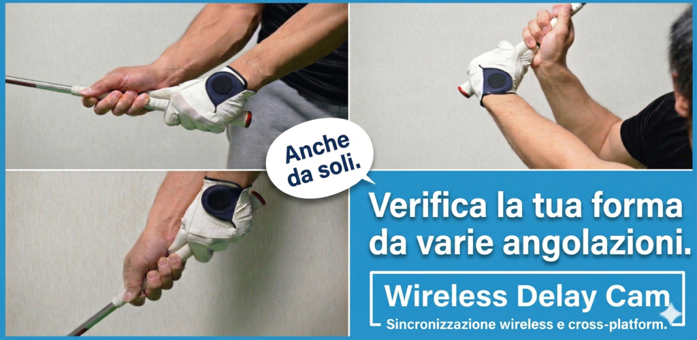
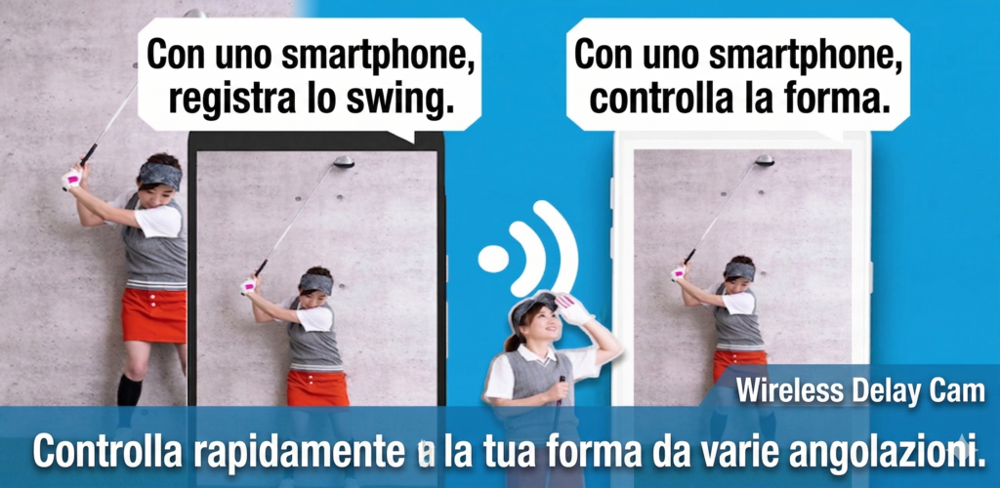
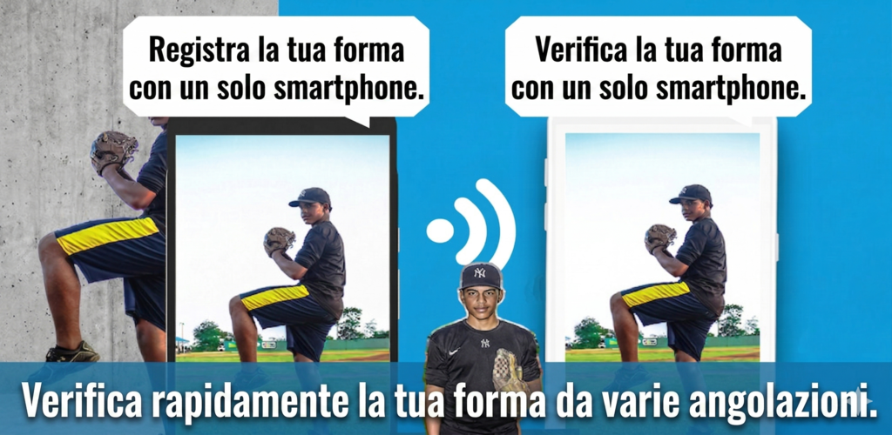
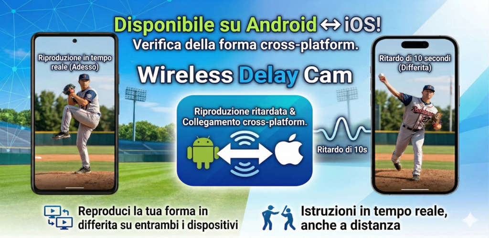

Funziona tra sistemi diversi
Usa un iPhone come fotocamera e un Android come monitor, oppure il contrario. L'app e progettata per ambienti con dispositivi misti.
Trasferimento video wireless multipiattaforma
Wireless Delay Cam collega dispositivi fotocamera e dispositivi di visualizzazione tra iOS e Android. Trasmetti video in diretta senza fili sulla stessa rete Wi-Fi o tramite tethering, poi connetti rapidamente i dispositivi con rilevamento automatico o QR code.



Funzioni
Usa un iPhone come fotocamera e un Android come monitor, oppure il contrario. L'app e progettata per ambienti con dispositivi misti.
Non serve un router. Se un dispositivo crea una rete condivisa, fotocamera e schermo possono unirsi e iniziare la trasmissione.
Il dispositivo di visualizzazione puo essere trovato automaticamente sulla stessa rete, riducendo i tempi di preparazione.
Scansiona il QR code del dispositivo di visualizzazione dal lato fotocamera per collegarti senza inserire manualmente i dati di rete.
Configura la latenza sul ricevitore quando servono monitoraggio differito, confronti o effetti di presentazione.
Il ricevitore supporta zoom, specchio e registrazione. Anche il trasmettitore puo salvare il flusso quando necessario.
Uso
Avvia un dispositivo come fotocamera e l'altro come schermo.
Usa il rilevamento automatico sulla stessa rete Wi-Fi oppure associa subito i dispositivi con un QR code.
Configura latenza, bitrate e orientamento sullo schermo in base al risultato desiderato.
Osserva il video ricevuto e usa registrazione o zoom quando serve.
Schermate


Casi d'uso
Registra con un dispositivo e controlla l'immagine su un altro, anche se usano sistemi operativi diversi.
Aggiungi latenza in modo intenzionale per confrontare movimenti, fare dimostrazioni o creare effetti visivi.
Crea un ambiente di monitoraggio leggero senza hardware dedicato quando sul posto sono presenti dispositivi iOS e Android.
FAQ
No. Non serve internet esterno finche entrambi i dispositivi possono vedersi sulla stessa rete Wi-Fi o tethering.
No. L'app supporta sia il rilevamento automatico sia l'associazione tramite QR per scegliere l'opzione piu rapida.
Si. L'app e progettata per combinazioni multipiattaforma in cui trasmettitore e ricevitore usano sistemi mobili diversi.
Si. Sia il trasmettitore sia il ricevitore includono opzioni per salvare il flusso quando necessario.